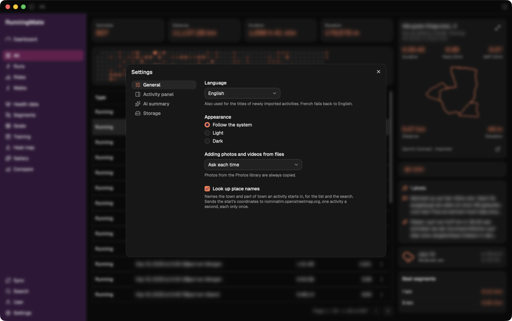
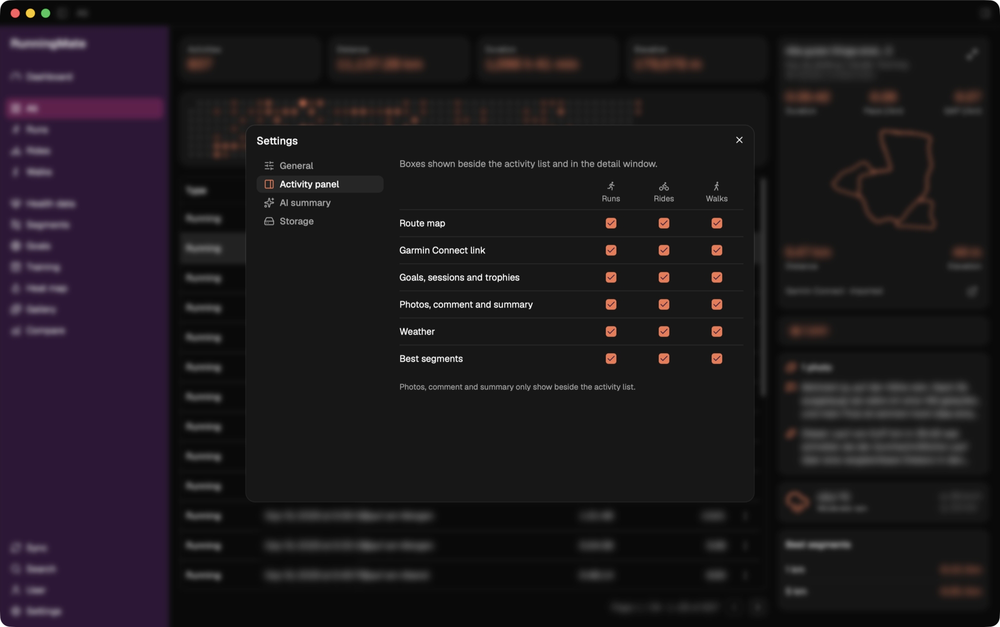
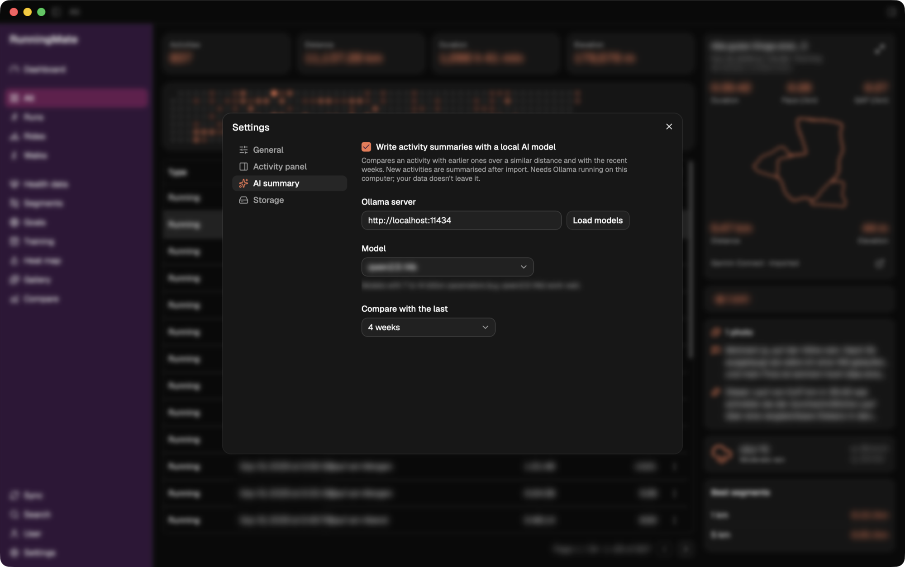
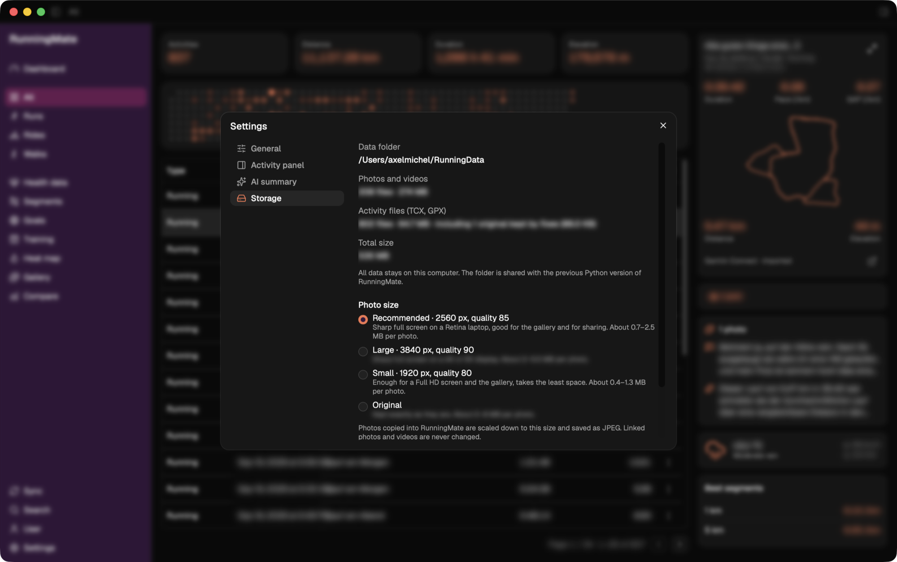

Settings
The Settings dialog holds the settings for the app itself. Your profile, heart-rate zones, shoes and bikes are in the
user settings. Open it with Settings at the bottom of the sidebar, with RunningMate →
Settings… or with ⌘,. Changes are saved as soon as you make them. They are stored in
~/RunningData/appdata/settings.json.
General

- Language: English or Deutsch. The language is also used for the titles of newly imported activities. Français can be chosen, but the app is shown in English then.
- Appearance: Follow the system, Light or Dark.
- Adding photos and videos from files: what happens when you add a photo or video from disk to an activity.
Always copy into RunningMate copies the file into
~/RunningData/media. Always link to the originals keeps only a link to the file where it is, so it takes no extra space, but the photo is gone from RunningMate if you move or delete the file. Ask each time asks when you add files, with Remember my choice (can be changed in the settings) to set this setting from there. Photos from the Photos library are always copied. - Look up place names: names the town and part of town each activity started in (for example "Freiburg im Breisgau, Wiehre"), shown in the activity panel, the detail window and the Location column, and found by the search. On by default. It sends the coordinates of the start, and nothing else, to nominatim.openstreetmap.org, OpenStreetMap's place-name service: one activity a second at most, each only once (activities starting close to one already named reuse its name without asking). New activities are looked up after the import, older ones in the background. Turn it off to send nothing; names already found are kept. Names are in the language set when they were looked up.
Activity panel

Choose which boxes the panel beside the activity list and the detail window show, separately for Runs, Rides and Walks. Tick or untick a box per sport:
- Route map
- Garmin Connect link
- Goals, sessions and trophies
- Photos, comment and summary (only beside the activity list)
- Weather
- Best segments
Other activities always show every box.
AI summary

RunningMate can write a short summary of each activity with a language model that runs on your own computer, through Ollama. It is off until you turn it on.
- Install Ollama and a model, for example with
ollama pull qwen2.5:7b. - Tick Write activity summaries with a local AI model.
- Ollama server is
http://localhost:11434by default. Change it only if Ollama runs elsewhere. - Click Load models. If none are installed, you are told so.
- Pick a Model. Models with 7 to 14 billion parameters (for example
qwen2.5:14b) work well. - Compare with the last sets how many weeks before the activity it is compared with: 2, 4 (the default), 8 or 12 weeks.
Nothing is sent to an online service: the facts go only to the Ollama server you entered, which with the default address is your own computer.
The summary card
With summaries on and a model chosen, the General page of the detail window shows a Summary card, and the activity panel shows its start under Photos, comment and summary.
New activities from the last 14 days get a summary after they are imported. For other activities click Write summary; Rewrite writes a new one. Re-importing an activity drops its summary, since it was written from the old values; an activity from the last 14 days gets a new one.
RunningMate works out the comparison itself and gives the model only the results; the model is told not to calculate anything. The facts are:
- the activity: sport, title, your comment, date, distance, time, pace or speed, heart rate, climb and temperature
- how it compares with your last 10 activities over a similar distance (within 10 %, at least 0.5 km)
- how it compares with your activities in the chosen weeks before it
- where available: pacing over the splits, training effect, time in the heart-rate zones, your training form and personal bests set in the activity
The summary is 4 to 6 sentences in your language, says what stands out and ends with a hint for the next training. Below it you see which model wrote it. AI can be wrong.
The same setting turns on the AI notes on the Training page.
Storage

Shows the Data folder (RunningData in your home directory), how many Photos and videos are copied there and
how much space they take, the Activity files (TCX, GPX), the archived file of each activity (with the GPX file it was
converted from, if any) and how much space they take together with the originals kept when you fixed an activity and the
files waiting for a route, and the Total size of the folder. All data stays on this computer. The folder is shared
with the earlier Python version of RunningMate. See Sync for what is kept where.
Photo size
Photos copied into RunningMate (from the Photos library, the photo picker, dropped onto the app or added from disk with Copy into RunningMate) are scaled down so their longest side fits the chosen size, and saved as JPEG. They are never scaled up, and turned upright first, so they keep their orientation; the capture date and the other photo details stay in the file. A photo that wouldn't come out noticeably smaller (by at least a tenth) is kept as it is, and so is one that can't be read. Linked photos and videos are never changed. PNG images with transparent areas stay PNG; HEIC photos are converted on macOS only.
| Setting | Longest side | JPEG quality | Size per photo¹ | Good for |
|---|---|---|---|---|
| Recommended (default) | 2560 px | 85 | about 0.7–2.5 MB | Full screen on a Retina laptop, the gallery, sharing |
| Large | 3840 px | 90 | about 2–5.5 MB | Full screen on a 4K or 5K display |
| Small | 1920 px | 80 | about 0.4–1.3 MB | A Full HD screen and the gallery, the least space |
| Original | unchanged | unchanged | about 2–8 MB | Keeping the photos exactly as taken |
¹ Measured on 12-megapixel phone photos (4032 × 3024 px); detailed photos (grass, gravel, leaves) are at the top of the range, sky and water at the bottom. Photos already smaller than the setting stay about the same size.
The setting applies to photos added from then on. Shrink stored photos… below it says how many of the photos
already copied into RunningMate are larger than the setting and how much space they take, and after you confirm
replaces them by smaller versions, a few at a time with progress. A HEIC or PNG photo becomes a .jpg file. Linked
photos and their originals stay untouched. Replacing can't be undone, so keep the originals elsewhere (e.g. in your
Photos library) if you may need them at full size again.